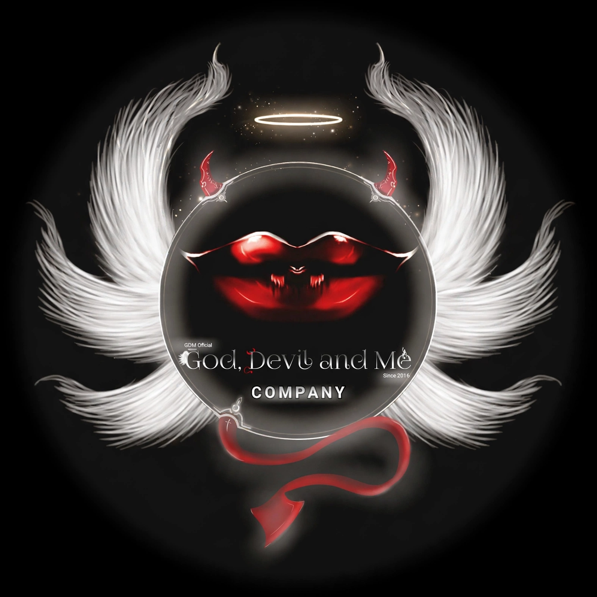
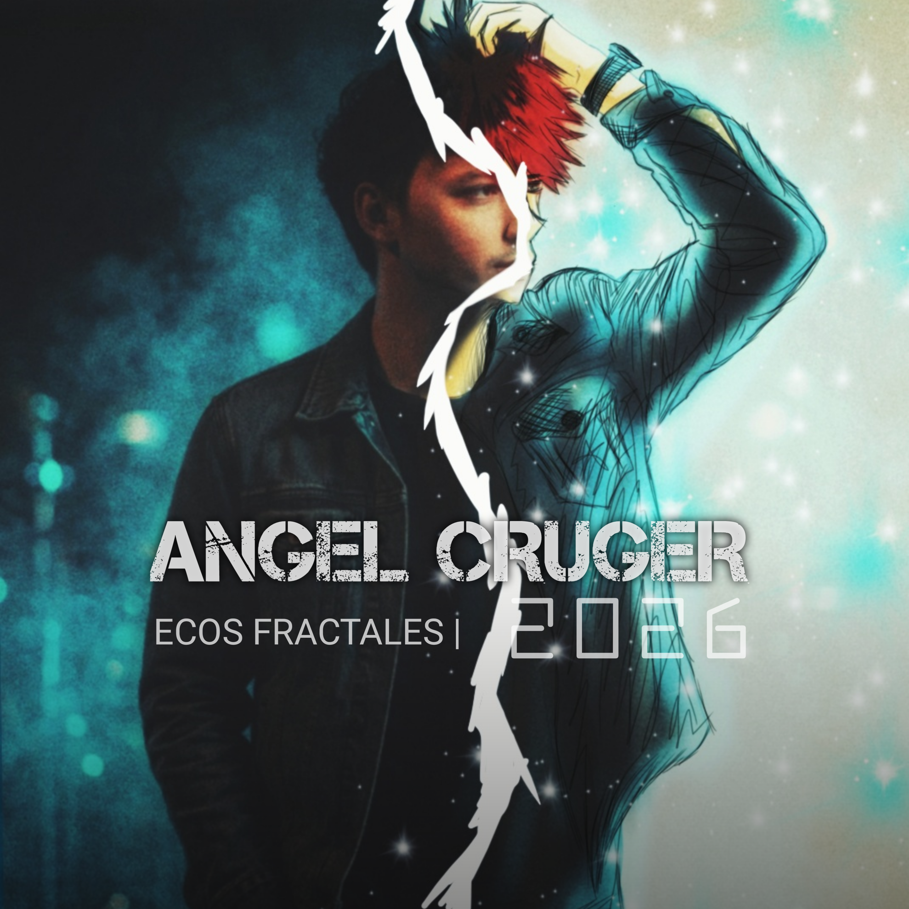

SUMARIO
Producción Musical
Angel Cruger experimentó con proyectos musicales bajo el seudónimo Anónimo durante 2020, generando apenas algunas pistas de sonido rítmico para videos personales y proyectos de GDM. Principalmente se trató de música de fondo experimental y sonidos electrónicos, mismos que se presentaron en algunos grupos dentro de su círculo y en redes sociales.

No fue sino hasta 2022 que, tras experimentar con la creación de producciones más complejas para integrarlas en OneSTUDIO, se crearon las primeras canciones con títulos como Redes o Luz que se dobla. Actualmente cuenta con varias pistas originales bajo su sello de producción musical personal (SPMP) GDM (God, Devil and Me, enfocado en su división de música), lanzando varios temas como solista bajo el nombre artístico independiente de Angel Cruger en el álbum compilatorio ECOS FRACTALES.
Aunque se había mantenido como un tema aislado de los demás proyectos, algunas de las canciones se compartieron de manera directa en redes sociales para medir la aceptación de la propuesta, lo que despertó el interés de seguidores y usuarios nuevos a quienes les agradó el sonido; esto permitió seguir experimentando y generar un estilo propio.
Actualmente, Angel Cruger ha compartido un total de 8 canciones inéditas y ha mencionado haber desarrollado en este tiempo un total de 20 canciones propias terminadas, siendo una de las más emblemáticas de su álbum CINEBRA, que refleja un estilo propio marcado por una era del rock pesado y el grunge de principios de los 2010's.
Las canciones tienen marcados diferentes momentos y vivencias, por lo que cada una representa distintos estados de creación en producción y lugares completamente diferentes; esto genera un sonido un poco distinto entre una pista y otra. En cuanto a la música y la letra, el propio Angel ha expresado que algunas de ellas reflejan estados de conciencia diferentes, teniendo incluso dos canciones completamente en inglés, aunque decidió abandonar dicho idioma debido a diferencias creativas y para darle mejor oportunidad de exposición al estilo gótico y rockero completamente en español.
Cruger ha expresado en diferentes ocasiones que, lejos de querer dedicarse a subirse a escenarios y cantar en grandes conciertos, creó su música pensando en los usuarios que no son de salir de su rutina pero que quieren escuchar cosas nuevas, lejos de los estándares comerciales clásicos de Hollywood o las tendencias asiáticas, donde muchas veces se utilizan narrativas para atraer público sacrificando la identidad del proceso creativo. Angel Cruger no se define a sí mismo como un artista musical —aunque es quien escribe sus propias canciones y canta utilizando tanto instrumentos como elementos digitales para sus composiciones—; ha expresado que es el público que lo ve o lo sigue quien a veces le suele llamar así, pero que se considera más una persona a la que le gusta experimentar y aprender de cada cosa que puede cuando tiene tiempo, sin dedicarse de lleno a la composición de canciones.
Aunque Cruger sorprendió a sus seguidores de redes sociales al dar el salto a temas más enfocados en ciencia de datos, ciberseguridad y tecnología, en el caso de la música, quien ya lo seguía en proyectos de su estudio creativo God, Devil and Me sabe que ya incursionaba en otras disciplinas como narrativa, ilustración, diseño y música, aunque en una escala mucho menor.
Entre las canciones que conforman su repertorio se encuentran: Cinebra, Ante el falso Dios, De tu querer, Flor de metal, La ley de la gran ciudad, Luz que se dobla, Momentos, Rabia animal, Redes, Rencor y amor, Rey de la conciencia, Señor de las tormentas, Soy un errante, Trono de papel, Zodíaco, Estrellas en este Infierno, On the boulevard y The velvet cage.
Por mencionar alguna, Cruger comentó haber creado la canción Momentos para quien lucha contra la depresión o está pensando en el suicidio, buscando ayudar a entender a otros que no es un tema que se deba ignorar, pero sobre todo para darle fuerza y valor de continuar a quienes están pasando por momentos difíciles donde consideran que la única alternativa es acabar con su vida.
Si quieres saber más sobre su música, estará disponible en diferentes plataformas de streaming como Spotify, Amazon Music, Apple Music, entre otros...